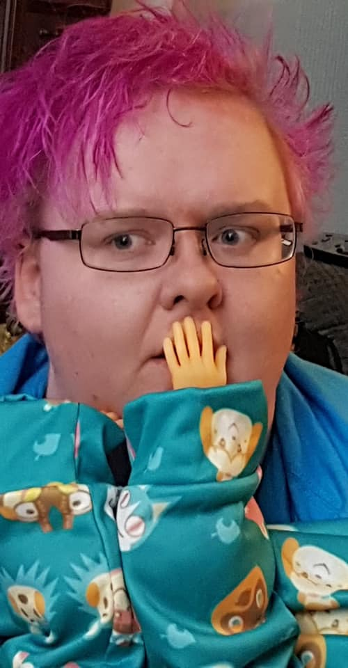

Twitter |
Facebook |
Instagram |
Portfolio

Hi! This face you're seeing is mine. My name is Al Sherlock, I've been a artist for 11 years now (freelance for 8) and I'm still learning everything as I go. Just call me a jack-of-all-trades!
I enjoy making digital art as well as traditional, but I do love getting my hands into some fabric for costume making now and then.
Artistic Freelancing
November 2014 - Current
- Producing illustration work for clientele and working with them to achieve desired outcomes.
- Producing excellent quality costumes for clientele internationally and keeping to an excellent standard throughout the construction.
- Keeping to a schedule and maintaining contact with clients to show them progress and offer advice on certain aspects throughout the commission's timeline.
- Occassionally host art tables at comic conventions to network and get artwork out to the public via means of selling art prints, custom made accessories, etc.
Qualifications
AUGUST 2018 - MAY 2019
University - Coleg y Cymoedd
Foundation Diploma in Costume Construction for Screen and Stage Level 4 - NOT ACHIEVED
- Unable to obtain the required certification, but was trained in using industrial sewing machines and industrial overlocking machines.
- Made various costumes based on modules given.
- Trained to make corsets, trained to weather costumes, trained to design and create costumes based on illustrations.
AUGUST 2019 - JUNE 2020
College - Fife College
National Certificate: Make-Up Artistry SCQF Level 6 - ACHIEVED
- Worked in the industry of makeup artistry, including face painting, makeup application, etc.
- Completed briefs to my best standard and managed to submit modules on time dispite moving to online classes half way through the course due to current world situations.
- Worked with clients and classmates on a professional level before moving online. Gained COVID-19 Health and Safety certificate for working on clients.
AUGUST 2020 - JUNE 2021
College - Fife College
National Certificate: Computer Games: Creative Development (and Animation) SCQF Level 6 - ACHIEVED
- Worked through online classes with this qualification, working with computers on an almost daily basis.
- Lots of different modules worked on. Including 2D animation, 3D modelling and animation, Character Creation, Programming in python, Game development and team working abilities.
- Gained a lot of experience working on this course and value the time I spent on it growing my abilities.